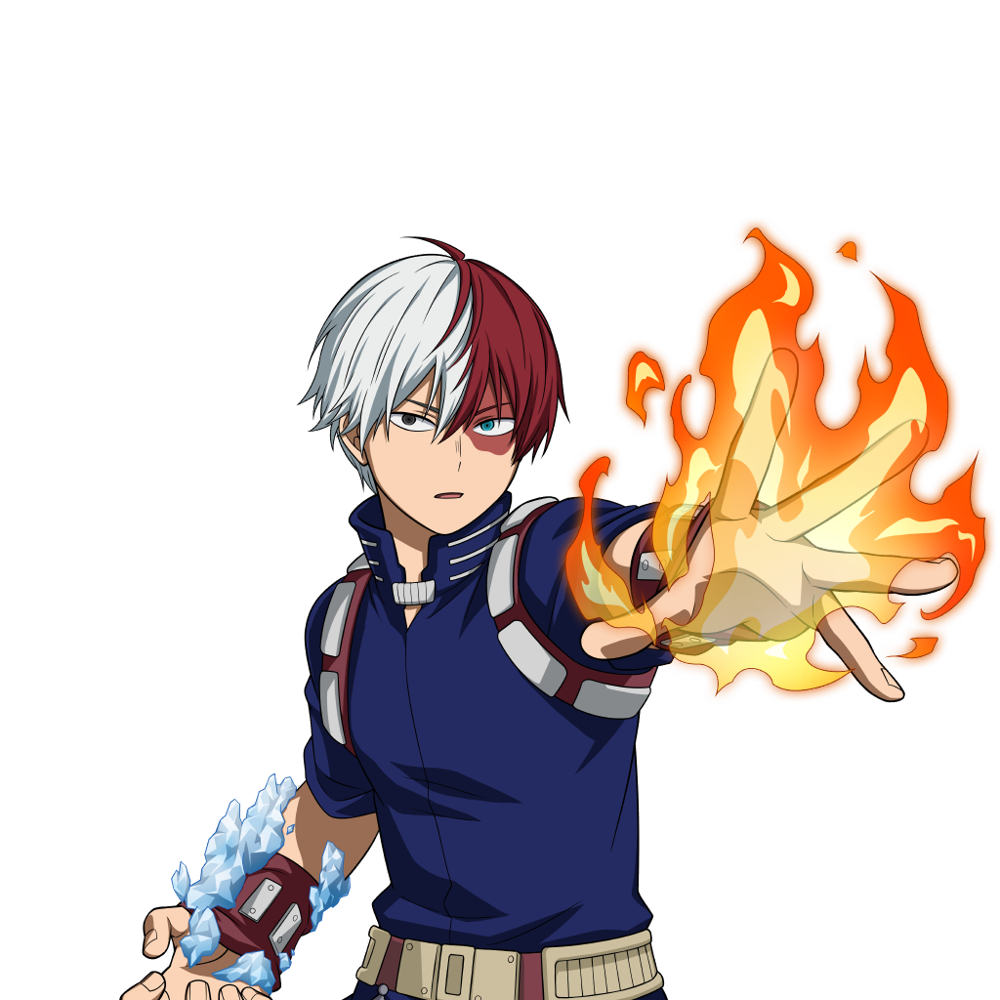

Sinopse
O aparecimento de "Quirks", recém-descobertos superpoderes, tem aumentado constantemente ao longo dos anos, com 80% da humanidade possuindo várias habilidades, desde a manipulação de elementos até a mudança de modelagem. Isso deixa o restante do mundo completamente impotente, e Izuku Midoriya é um desses indivíduos.
Desde criança, o ambicioso ensino médio não queria nada além de ser um herói. O destino injusto de Izuku o deixa admirando heróis e tomando anotações sobre eles sempre que puder. Mas parece que sua persistência nasceu um pouco de fruto: Izuku conhece o herói número um e seu ídolo pessoal, tudo pode. A peculiaridade de All Might é uma habilidade única que pode ser herdada, e ele escolheu Izuku para ser seu sucessor!
Após muitos meses de treinamento cansativo, Izuku se matricula na UA High, uma prestigiada escola famosa por seu excelente programa de treinamento de heróis, e os calouros deste ano parecem especialmente promissores. Com seus colegas bizarros, mas talentosos, e a ameaça iminente de uma organização vilã, Izuku em breve aprenderá o que realmente significa ser um herói.
INFORMAÇÕES
Veja abaixo as informações do anime: Boku no Hero
Nomes do anime
- Nome do Anime: Boku no Hero Academia
- Nome do Anime em Japonês: 僕のヒーローアカデミア
- Nome do Anime em Inglês: My Hero Academia
Avaliações gerais do anime:
- Nota: 7.921/10.000
- Popularidade: 871.135
PERSONAGENS
Izuku Midoriya
Izuku Midoriya

Izuku Midoriya é o protagonista do anime e mangá Boku no Hero Academia (My Hero Academia). Ele é um jovem estudante que sonha em se tornar um herói, apesar de nascer sem nenhuma habilidade especial (chamada "quirk", ou peculiaridade).
Katsuki Bakugo
Katsuki Bakugo

Katsuki Bakugo é um dos personagens principais do anime My Hero Academia. Ele é um estudante da U.A. High School, onde treina para se tornar um herói profissional. Bakugo é conhecido por sua personalidade explosiva, tanto no sentido literal quanto figurado, sendo altamente impetuoso, competitivo e, muitas vezes, agressivo. Seu poder, chamado "Explosion" (Explosão), permite que ele crie explosões a partir do suor de suas mãos, dando-lhe uma enorme vantagem em combate.
Ochaco Uraraka
Ochaco Uraraka

Ochaco Uraraka é uma das protagonistas de My Hero Academia e uma estudante da U.A. High School, onde treina para se tornar uma heroína. Seu poder, chamado "Zero Gravity" (Gravidade Zero), permite que ela anule a gravidade de objetos ou pessoas, fazendo-os flutuar. Uraraka é gentil, otimista e muito amigável, sempre disposta a ajudar seus amigos.
Shoto Todoroki
Shoto Todoroki
Shoto Todoroki é um dos principais personagens de My Hero Academia e estudante da U.A. High School. Ele possui uma Quirk poderosa chamada "Half-Cold Half-Hot", que lhe permite controlar tanto fogo quanto gelo, com o lado esquerdo do corpo capaz de gerar chamas e o lado direito, gelo.
Eijiro Kirishima
Eijiro Kirishima

Eijiro Kirishima é um dos personagens de My Hero Academia e um estudante da U.A. High School, conhecido por sua personalidade extrovertida, amigável e corajosa. Seu poder, chamado "Hardening" (Endurecimento), permite que ele faça seu corpo se tornar extremamente duro e resistente, como se fosse feito de pedra ou metal, o que o torna um excelente defensor em combate.